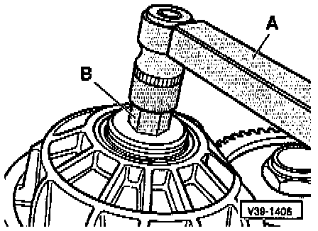
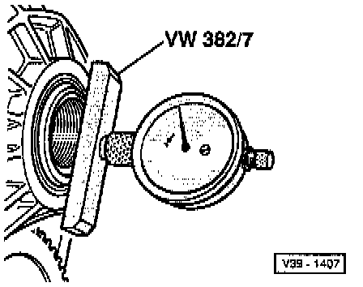
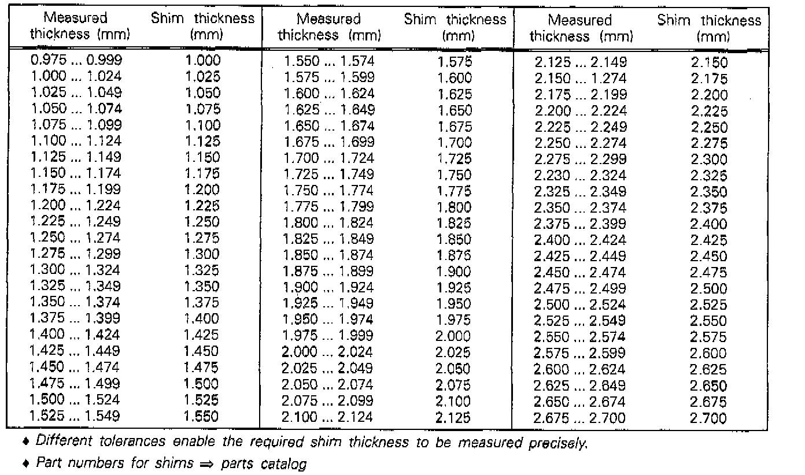
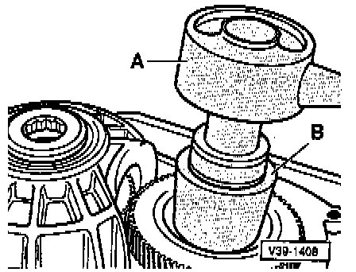

Input Gear
ADJUSTING
- Tighten socket-head fastener to 100 Nm (74 ft lb) without dished washer and without shim.
A - Torque wrench
B - 22 mm socket
The parking lock must be engaged.
- Remove socket-head fastener.

- Measure distance between input gear and tapered roller bearing inner race.
- Insert dial gauge and zero with a preload of 3 mm.
Note reading (example 1.00 mm).
The thickness of the dished washer (1.50 mm) must be added to the reading.
Example:
1.00 mm + 1.50 mm = 2.50 mm
DETERMINING SHIM THICKNESS
- The correct shim thickness is determined by deducting the specified bearing preload of 0.18 mm from the figure of 2.50 mm (example) obtained from the measurement.
Example:
(Dished washer + reading) - Bearing preload = Thickness of shim
2.50 mm - 0.18 mm = 2.32 mm
- Determine shim, from table below, and install on drive shaft.
Shim Table For Drive Pinion Adjustment:

- Insert axial needle bearing and tighten socket-head fastener
including dished washer to 250 Nm (184 ft lb).
NOTE:
^ Insert axial needle bearing for input shaft before tightening socket-head fastener
^ Installation position, refer to Removing and Installing Input Gear. Service and Repair
FRICTION (TURNING) TORQUE, CHECKING

A -Torque gauge, commercially available 0 - 600 Nm (3 - 50 inch lb)
B - Socket (41 mm AF)
- Moisten bearings beforehand with ATF.
- The friction torque of new tapered roller bearings must be 180 - 220 Nm (16 - 20 inch lb) greater than the friction torque at the drive pinion.
Example:
Drive pinion (from measurement, refer to Drive Pinion) = 100 Ncm
See Note (1) below
Input gear (average) = 200 Ncm
Friction torque of input gear + drive pinion = Friction torque
100 Nm + 200 Nm = 300 Nm
(1) In the case of used bearings, substitute the friction measured for the drive pinion.